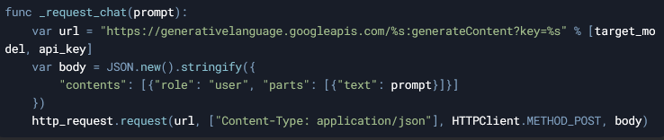
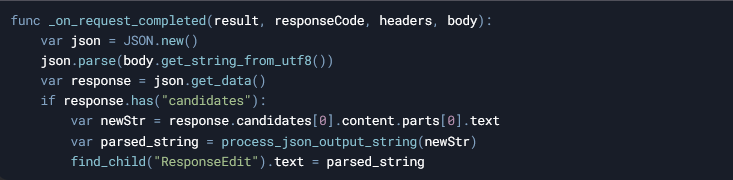
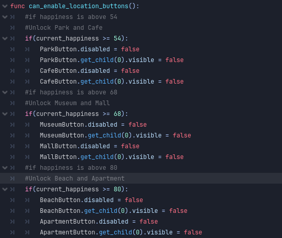
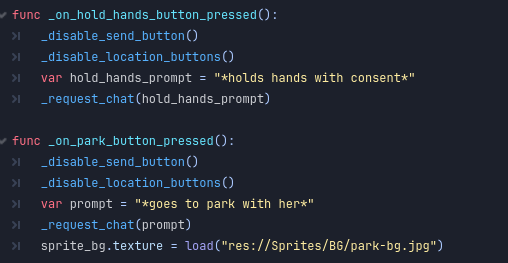

Dating Sim with LLM
Gameplay
Overview
A project developed in Godot that utilizes Generative AI. It is a straightforward dating sim where you chat with the character in order to get affinity and make her happy. The responses are generated by Gemini. The more you talk and gain camaraderie with the character, you unlock more features like new actions and locations to go with her. The game was developed in Godot and connects with Gemini API for a functional chatbot dating experience.Goal
I love exploring LLMs and the potential uses of AI in game development. I was already used to using Gemini personally, so I decided to go with that for the backend. Inspired by Character.ai chatbots, I wanted to create my own little experience that showcases the fun that can be had with Generative AI to facilitate conversations, as well as adding mechanics to enhance the experience.Development
Connecting Gemini to Godot
The journey started with figuring out how to connect **Gemini API** to Godot. While Godot is a versatile engine, it’s not commonly used for AI-driven games, and Gemini doesn’t have as much documentation or community support as other LLMs like ChatGPT. I felt like I was venturing into uncharted territory.Fortunately, I stumbled upon an **open-source project** that demonstrated how to use Gemini in Godot.The project included sample scenes that showed how to link to the Gemini API using an API key, send user input, and receive responses. This gave me a solid foundation to build on, but I needed to adapt it for my game.
To connect to the Gemini 1.5 API, I used Godot’s HTTPRequest node to send POST requests to the Gemini API endpoint. The API key, stored in a settings.json file, was loaded at runtime and appended to the request URL. The request body included the conversation history and a user prompt, formatted as a JSON object. This allowed the API to generate context-aware responses based on the ongoing dialogue.

Once the response was received, the script parsed the JSON output to extract the AI’s message, emotion, and emotional value. The _on_request_completed function handled the response, updating the UI with the AI’s dialogue and adjusting the character’s sprite and happiness level based on the parsed emotion. This seamless integration enabled dynamic, AI-driven conversations that shaped the gameplay experience.

Crafting the AI Character’s Personality
With the technical foundation in place, I turned my attention to designing the AI character. Drawing from my experience creating roleplay bots in Gemini and Character.ai, I crafted an initial prompt that defined the character’s personality, backstory, likes, and dislikes. This prompt was sent to Gemini at the start of the scene to set the tone for the conversation.But I wanted the bot’s responses to include more than just dialogue—I needed information about the character’s **current emotion** to display the appropriate sprite and update the **Happiness Meter**. This required structuring the bot’s responses in a way that Godot could parse and use. I modified the initial prompt to instruct Gemini to respond in **JSON format**, with tags for `dialogue`, `emotion`, and `emotional_amount`.
This structure made it easy to extract the necessary data and update the game state dynamically. It was a breakthrough moment, as it allowed me to tie the AI’s responses directly to the gameplay systems.

Building the Happiness Meter and Unlockable Features
To add depth to the gameplay, I implemented a **Happiness Meter** system. This hidden variable tracked the player’s progress in building a relationship with the character. The `emotional_amount` value from the JSON response was used to adjust the meter, with positive interactions increasing it and negative interactions decreasing it.Balancing the Happiness Meter was tricky. I had to determine how much each interaction should affect the meter, ensuring it felt fair and rewarding. For example, a happy response might add 10 points, while an angry response might subtract 15. Playtesting was crucial here—I spent several playtest sessions tweaking the values to get the balance just right.

As the Happiness Meter increased, players unlocked new features, such as **holding hands** or visiting new locations like a park or the character’s house. These features were designed to encourage positive interactions and give players a sense of progression. Clicking on these buttons basically sends a prompt to Gemini, telling a roleplay action of going to these locations or holding hands.



Playtesting and Feedback
Playtesting revealed some fascinating insights into how players interacted with the AI-driven character. Some players embraced the roleplaying aspect, asking the character out on dates and building a genuine connection. Others, however, pushed the boundaries of the system, saying outrageous or nonsensical things just to see how the bot would react.While the game didn’t enforce any specific way of playing, I wanted to subtly guide players toward more meaningful interactions. To do this, I added visual feedback, such as changes in the character’s expression and dialogue, to reinforce the impact of their choices. However, with this open-ended gameplay, there's only so much control a designer can have over player autonomy.